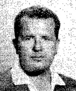

|
Il nome dei mossieri e le loro presenze nel Verrocchio.
Si ricorda che l'attuale sistema regolamentare è entrato in vigore nel 1894. Da allora il Comune nomina il Mossiere su segnalazione dei Capitani.


28 presenze
Guido Guidarini  (2.7.1935 - 16.8.1937) (16.8.1947 - 2.7.1957) (2.7.1935 - 16.8.1937) (16.8.1947 - 2.7.1957) 
19 presenze
Bartolo Ambrosione (2.7.2004 - 16.8.2004) (2.7.2010 - 16.8.2011) (16.8.2012 - 16.8.2015) (2.7.2019 - 16.8.2019) (16.8.2022 - 4.7.2024)
17 presenze
Venturino Benvenuti (2.7.1914 - 16.8.1914) (2.7.1919 - 2.7.1922) (2.7.1923 - 16.8.1924) (2.7.1927 - 2.7.1928)
Pasquale Meucci (16.8.1907 - 3.7.1908) (16.8.1909 - 25.9.1913) (16.8.1922)
Guglielmo Ricci (16.8.1929 - 3.7.1932) (2.7.1933 - 2.7.1934) (16.8.1939) (2.7.1945) (16.8.1946 - 2.7.1947)
13 presenze
Carlo Andrea Fagnani (2.7.1959 - 16.8.1963) (2.7.1966)
12 presenze
Leonildo Fabbrini (2.7.1899 - 17.4.1904)
Amos Cisi (3.7.1991 - 16.8.1996)
Giorgio Guglielmi da Vulci (2.7.2000 - 16.8.2002) (2.7.2007) (2.7.2008 - 16.8.2009)
8 presenze
Giovanni Cavallotto (2.7.1895 - 16.8.1897)
Sabatino Vanni (16.8.1969 - 16.8.1972)
Ilario Atanasi (2.7.1974 - 16.8.1977)
Ulrico Ricci (2.7.1980 - 3.7.1983)
7 presenze
Daniele Masala (2.7.1989 - 16.8.1989) (16.8.2003) (2.7.2005 - 16.8.2006)
Fabio Magni (2.7.2016 - 20.10.2018)
6 presenze
Amerigo Pellegrini (3.7.1904 - 16.8.1904) (16.8.1905 - 2.7.1907)
Wilson Pesciatini (2.7.1964 - 16.8.1965) (17.8.1966) (16.8.1990)
Renato Bircolotti (2.7.2022) (17.8.2024 - 16.8.2026)
5 presenze
Piero D'Inzeo (2.7.1986 - 16.8.1987)
4 presenze
Lodovico Tito Sarrocchi (2.7.1894 - 19.8.1894) (3.7.1898)
Adolfo Ponticelli (2.7.1925 - 16.8.1926)
Paolo Casilli (16.8.1957 - 16.8.1958)
Vittorio Baini (2.7.1967) (2.7.1968 - 2.7.1969)
Carlo Palmieri (3.7.1978 - 16.8.1979)
Rodolfo Valenti (2.7.1984 - 16.8.1985)
3 presenze
Alfredo Giovannoni (2.7.1938 - 2.7.1939)
Lorenzo Pini (16.8.1945 - 2.7.1946)
Gioacchino Calabrò (17.8.1972 - 16.8.1973)
Dino Costantini (3.7.1997 - 16.8.1997) (16.8.2007)
Mario Turner (2.7.1998 - 2.7.1999)
2 presenze
Lodovico Balli (16.8.1908 - 4.7.1909)
Gino Sampieri (2.7.1929) (16.8.1932)
Mauro Checcoli (2.7.1988 - 16.8.1988)
1 presenza
Carlo Alessandri (2.7.1905)
Giovanni Bagnoli (16.8.1928)
Olinto Lodovici (14.9.1928)
Ezio Felici (16.8.1934)
Jago Fuligni (16.8.1967)
Fedro Valentini (24.9.1967)
Francesco Fanucchi (16.8.1983)
Euro Federico Roman (2.7.1990)
Enzo Giorgi (16.8.1999)
Norberto Capozzella (2.7.2003)
Natale Chiaudani (2.7.2012)

|
|

A seguito dei fatti avvenuti durante il Palio dell'agosto 1966 il mossiere
Mario Cappelli, venne sostituito da Wilson Pesciatini (leggi la cronaca)
|
|
|